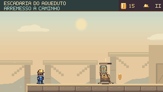
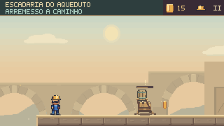

Um lugar que continua além do caminho.
Campos, moinhos e bairros ao longe; oficinas com profundidade, fundações e luz. Os fundos das seis fases de percurso receberam uma nova revisão, preservando a nitidez dos saltos, inimigos e descargas de água.
Subida · Arcos que sustentam o aqueduto


O aqueduto ganhou arcos de alvenaria com aduelas, pedras centrais e pilares até uma base comum. Os bairros distantes acompanham a subida em outra camada de profundidade.
Trecho de uma execução completa desde o início da fase, sem dano. Comandos de jogo, física a 60 Hz e captura a 30 fps; sem áudio. As imagens de antes e depois usam os mesmos comandos, posição do personagem, câmera e momento.

Construção, distância e movimento
Uma paisagem contínua
Uma nova camada reúne arrozais, canais, árvores, casas e moinhos. A paralaxe move cada conjunto inteiro, incluindo suas bases. A transição da Travessia mantém o mesmo céu, eliminando o sol duplicado.
Oficinas com estrutura
Galeria e Alívio ganharam vãos recuados, carpintaria, janelas, ferragens e fundações. Ferramentas identificam a oficina seca; venezianas, ventiladores e conduítes distinguem o setor hidráulico.
Vida em segundo plano
Rodas dos moinhos, reflexos nos canais e copas acompanham o tempo do jogo. Os apoios permanecem fixos. Pausar congela a decoração; o modo de movimento reduzido conserva uma pose estável.
O percurso permanece legível
Os detalhes distantes usam valores mais suaves. Bordas claras continuam indicando apoios reais; a água perigosa conserva seu ciano e seus avisos. Janelas antigas que atravessavam os novos vãos foram retiradas.
Inspeção completa das seis fases


Verificação
As seis execuções mantiveram posições, câmera, moedas e conclusão da referência. Passaram 3.719 testes TypeScript, com zero falhas e um caso opcional ignorado, além de três testes JavaScript, validadores e build. Vinte testes desta rodada conferem encaixes, paralaxe, continuidade do céu, pausa e movimento reduzido.
A campanha normal passou novamente pelo mapa e pelas oito cenas, incluindo os dois chefes, em nove execuções com gamepad simulado. Estudos de fundo no navegador verificam as imagens pausadas separadamente das partidas.